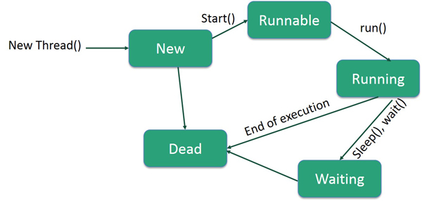

Prior to Java 2, Java provided ad hoc classes such as Dictionary, Vector, Stack, and Properties to store and manipulate groups of objects. Although these classes were quite useful, they lacked a central, unifying theme. Thus, the way that you used Vector was different from the way that you used Properties.
The collections framework was designed to meet several goals, such as
A collections framework is a unified architecture for representing and manipulating collections. All collections frameworks contain the following
It would be nice if we could write a single sort method that could sort the elements in an Integer array, a String array, or an array of any type that supports ordering.
Java Generic methods and generic classes enable programmers to specify, with a single method declaration, a set of related methods, or with a single class declaration, a set of related types, respectively.
Generics also provide compile-time type safety that allows programmers to catch invalid types at compile time.
You can write a single generic method declaration that can be called with arguments of different types. Based on the types of the arguments passed to the generic method, the compiler handles each method call appropriately. Following are the rules to define Generic Methods
Example
public class GenericMethodTest {
// generic method printArray
public static < E > void printArray( E[] inputArray ) {
// Display array elements
for(E element : inputArray) {
System.out.printf("%s ", element);
}
System.out.println();
}
public static void main(String args[]) {
// Create arrays of Integer, Double and Character
Integer[] intArray = { 1, 2, 3, 4, 5 };
Double[] doubleArray = { 1.1, 2.2, 3.3, 4.4 };
Character[] charArray = { 'H', 'E', 'L', 'L', 'O' };
System.out.println("Array integerArray contains:");
printArray(intArray); // pass an Integer array
System.out.println("\nArray doubleArray contains:");
printArray(doubleArray); // pass a Double array
System.out.println("\nArray characterArray contains:");
printArray(charArray); // pass a Character array
}
}
Output:
Array integerArray contains: 1 2 3 4 5 Array doubleArray contains: 1.1 2.2 3.3 4.4 Array characterArray contains: H E L L O
Java provides a mechanism, called object serialization where an object can be represented as a sequence of bytes that includes the object's data as well as information about the object's type and the types of data stored in the object.
After a serialized object has been written into a file, it can be read from the file and deserialized that is, the type information and bytes that represent the object and its data can be used to recreate the object in memory.
Most impressive is that the entire process is JVM independent, meaning an object can be serialized on one platform and deserialized on an entirely different platform.
Classes ObjectInputStream and ObjectOutputStream are high-level streams that contain the methods for serializing and deserializing an object.
Example
public class Employee implements java.io.Serializable {
public String name;
public String address;
public transient int SSN;
public int number;
public void mailCheck() {
System.out.println("Mailing a check to " + name + " " + address);
}
}
Notice that for a class to be serialized successfully, two conditions must be met
import java.io.*;
public class SerializeDemo {
public static void main(String [] args) {
Employee e = new Employee();
e.name = "Reyan Ali";
e.address = "Phokka Kuan, Ambehta Peer";
e.SSN = 11122333;
e.number = 101;
try {
FileOutputStream fileOut =
new FileOutputStream("/tmp/employee.ser");
ObjectOutputStream out = new ObjectOutputStream(fileOut);
out.writeObject(e);
out.close();
fileOut.close();
System.out.printf("Serialized data is saved in /tmp/employee.ser");
} catch (IOException i) {
i.printStackTrace();
}
}
}
Example
import java.io.*;
public class DeserializeDemo {
public static void main(String [] args) {
Employee e = null;
try {
FileInputStream fileIn = new FileInputStream("/tmp/employee.ser");
ObjectInputStream in = new ObjectInputStream(fileIn);
e = (Employee) in.readObject();
in.close();
fileIn.close();
} catch (IOException i) {
i.printStackTrace();
return;
} catch (ClassNotFoundException c) {
System.out.println("Employee class not found");
c.printStackTrace();
return;
}
System.out.println("Deserialized Employee...");
System.out.println("Name: " + e.name);
System.out.println("Address: " + e.address);
System.out.println("SSN: " + e.SSN);
System.out.println("Number: " + e.number);
}
}
Output
Deserialized Employee... Name: Reyan Ali Address:Phokka Kuan, Ambehta Peer SSN: 0 Number:101
Here are following important points to be noted
The term network programming refers to writing programs that execute across multiple devices (computers), in which the devices are all connected to each other using a network.
The java.net package of the J2SE APIs contains a collection of classes and interfaces that provide the low-level communication details, allowing you to write programs that focus on solving the problem at hand.
The java.net package provides support for the two common network protocols
There are two important subjects
To send an e-mail using your Java Application is simple enough but to start with you should have JavaMail API and Java Activation Framework (JAF) installed on your machine.
Here is an example to send a simple e-mail from your machine. It is assumed that your localhost is connected to the Internet and capable enough to send an e-mail.
Example
// File Name SendEmail.java
import java.util.*;
import javax.mail.*;
import javax.mail.internet.*;
import javax.activation.*;
public class SendEmail {
public static void main(String [] args) {
// Recipient's email ID needs to be mentioned.
String to = "abcd@gmail.com";
// Sender's email ID needs to be mentioned
String from = "web@gmail.com";
// Assuming you are sending email from localhost
String host = "localhost";
// Get system properties
Properties properties = System.getProperties();
// Setup mail server
properties.setProperty("mail.smtp.host", host);
// Get the default Session object.
Session session = Session.getDefaultInstance(properties);
try {
// Create a default MimeMessage object.
MimeMessage message = new MimeMessage(session);
// Set From: header field of the header.
message.setFrom(new InternetAddress(from));
// Set To: header field of the header.
message.addRecipient(Message.RecipientType.TO, new InternetAddress(to));
// Set Subject: header field
message.setSubject("This is the Subject Line!");
// Now set the actual message
message.setText("This is actual message");
// Send message
Transport.send(message);
System.out.println("Sent message successfully....");
} catch (MessagingException mex) {
mex.printStackTrace();
}
}
}
Compile and run this program to send a simple e-mail
Output
$ java SendEmail Sent message successfully....
Java is a multi-threaded programming language which means we can develop multi-threaded program using Java. A multi-threaded program contains two or more parts that can run concurrently and each part can handle a different task at the same time making optimal use of the available resources specially when your computer has multiple CPUs.
A thread goes through various stages in its life cycle. For example, a thread is born, started, runs, and then dies. The following diagram shows the complete life cycle of a thread.

Following are the stages of the life cycle
Every Java thread has a priority that helps the operating system determine the order in which threads are scheduled.
Java thread priorities are in the range between MIN_PRIORITY (a constant of 1) and MAX_PRIORITY (a constant of 10). By default, every thread is given priority NORM_PRIORITY (a constant of 5).
Threads with higher priority are more important to a program and should be allocated processor time before lower-priority threads. However, thread priorities cannot guarantee the order in which threads execute and are very much platform dependent.
An applet is a Java program that runs in a Web browser. An applet can be a fully functional Java application because it has the entire Java API at its disposal.
There are some important differences between an applet and a standalone Java application, including the following
Four methods in the Applet class gives you the framework on which you build any serious applet
Javadoc is a tool which comes with JDK and it is used for generating Java code documentation in HTML format from Java source code, which requires documentation in a predefined format.